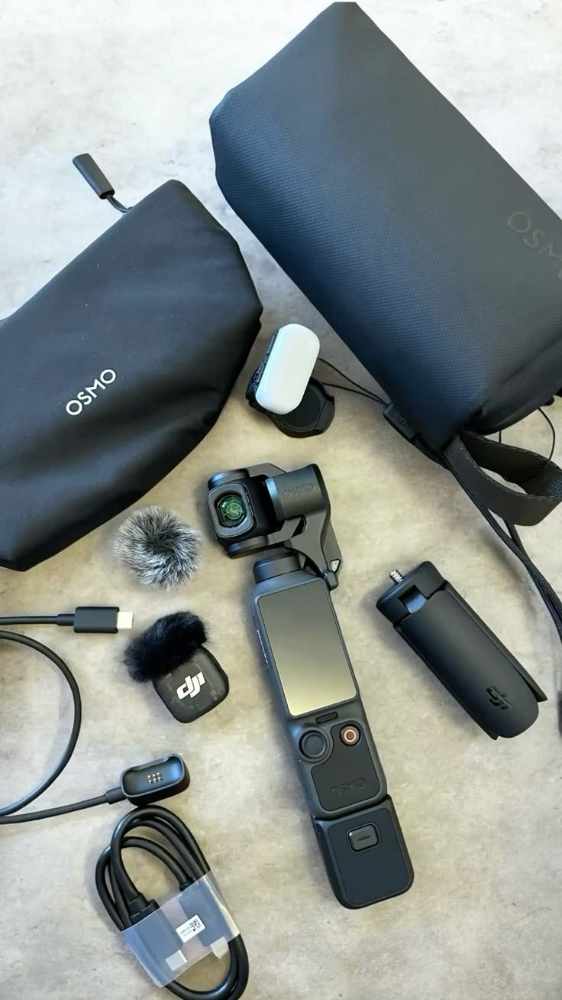

Vlog et Montage Vidéo
Je réalise régulièrement des montages pour des projets personnels. Au-delà de la technique, le montage m'a appris l'art du Storytelling : savoir assembler des éléments bruts pour raconter une histoire cohérente. Cette exigence du rythme et du détail m'aide aujourd'hui à structurer mes présentations de données.
